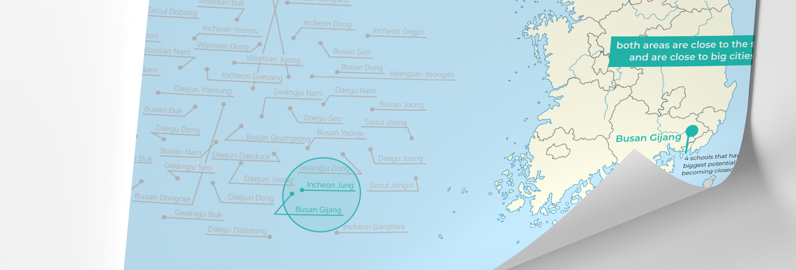
CLOSED SCHOOL UTILIZATION RECOMMENDATION SYSTEM
Re-born Schools
Project Info
Category
Data Visualization
Duartion
2018. 07 - 2018. 18
Team
Jihyeon Seo, Minsoo Song, Hyeon
ju Kim, Hyekyung Cho
ju Kim, Hyekyung Cho
My Role
Data design
Used Tools
Python, Illustrator
Honors
Seoul City Big Data Compe-
tition
tition
About
This data visualization project tackles the issue of schools being closed in rural areas in Korea. Statistics about Korea’s each region’s demography, cultural infrastructure, and local budget were used in t-sne algorithm, which resulted in grouping similar regions together. This provides a guideline that suggests closed schools in similar regions to be utilized or renovated in a similar method.
Challenge
This project aims to pursue social value with data. We wanted to demonstrate how public data of Seoul and its logical analysis can be used to help people. Furthermore, since closed schools is a phenomenon that causes severe socioeconomic problems particularly in Korea, we wanted to first start with a social problem that we face in our neighborhood.
2. HOW IT WORKS
1. RESULTS
Different parts of Korea are categorized according to their similarity based on socioeconomic factors following t-sne algorithm. This provides a renovation guideline for already closed schools and schools that has the potential to be closed in the near future. By following successful examples of renovated closed schools, other closed schools that are situated in similar areas can follow this example.
4. PROCESS
Statistics about demographical, cultural and economical characteristics in different regions in Korea were collected and used in PCA and t-sne algorithm to analyze the similarity between Korean provinces. Both algorithm was used for dimension reduction, and among them t-sne algorithm demonstrated a clearer categorization in a 2 dimensional graph. PCA illustrated the importance of each factor, which was used in combinaation with t-sne to find examples of guideline implementation methods.
Currently there are more closed schools in rural areas in Korea, compared to the metropolitan area. And this number is expected to increase due to urbanization in Korea.
Public schools that are closed due to lack of number of students in the area.
* What are closed schools?
 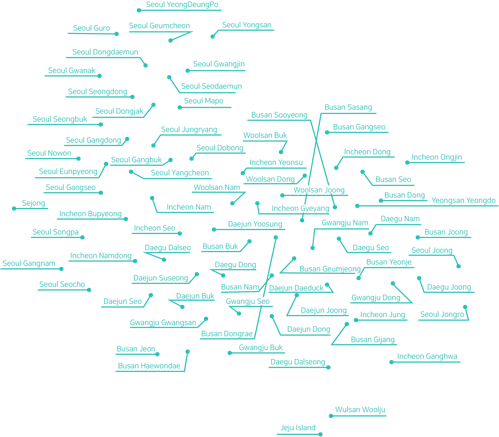
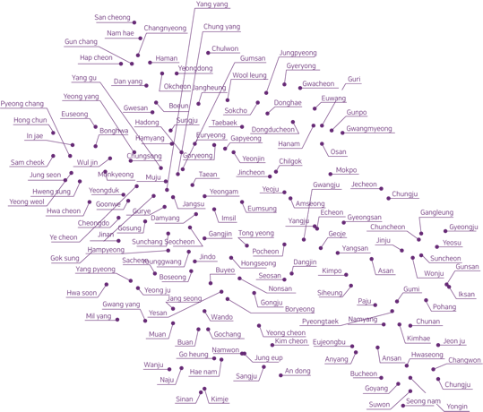
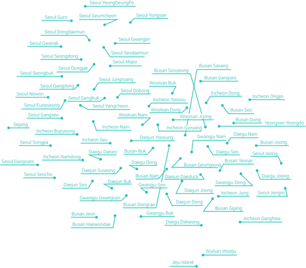
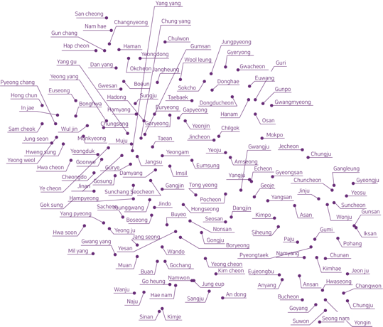
[Metropolitan Areas in Korea]
[Provinces in Korea]
[Metropolitan Areas in Korea]
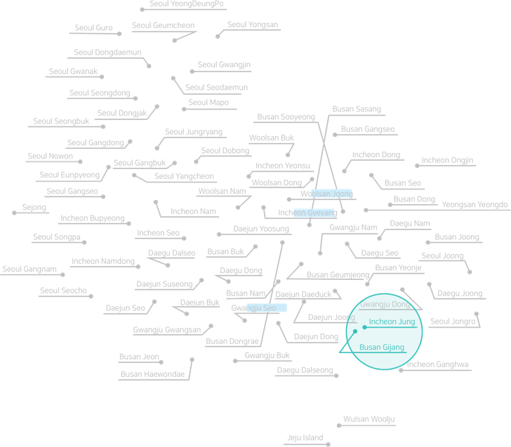
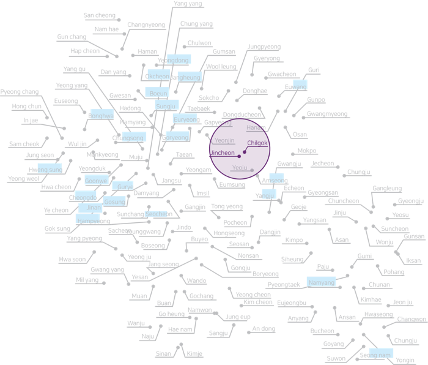
[Provinces in Korea]
Incheon’s Eulwang Elementary School that has been changed to a training center for teachers
4 schools that have the
biggest potential in
becoming closed schools
biggest potential in
becoming closed schools
Incheon Jung
both areas are close to the sea,
and are close to big cities
and are close to big cities
Busan Gijang
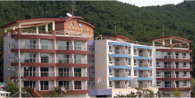
Chil gok’s Gisan Elementary
School that has been changed
to a traditional culture center
School that has been changed
to a traditional culture center
3 schools that have the
biggest potential in
becoming closed schools
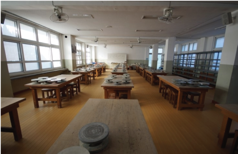
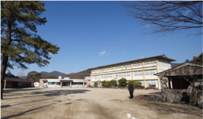
biggest potential in
becoming closed schools
both areas have highways that have
connection to metropolitan areas
connection to metropolitan areas
Jin cheon
Chil gok
[Number of closed schools in Korea]
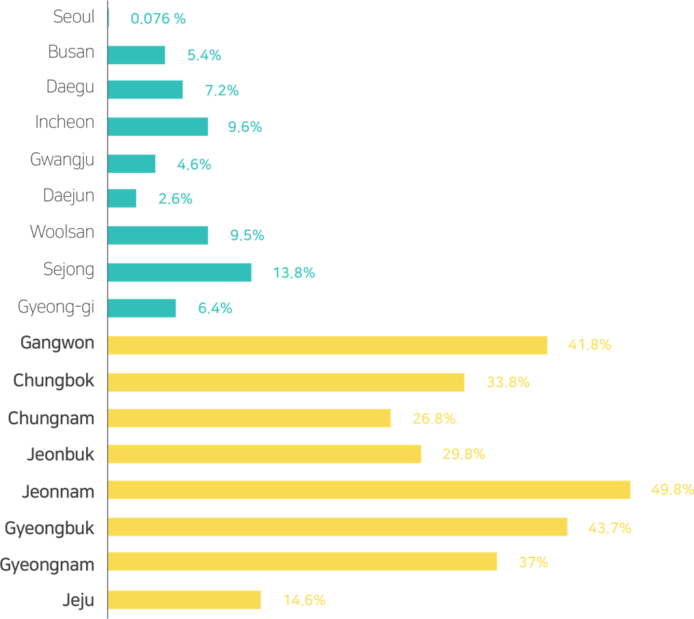
Closed school’s sale price decreases as time passes, when schools are own by the government.
Financial Aspects
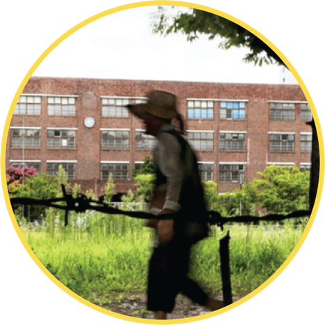
Closed school neighborhoods have the potential to become slum areas.
Educational opportunities are not provided equally to students in the closed school area.
Environmental Aspects
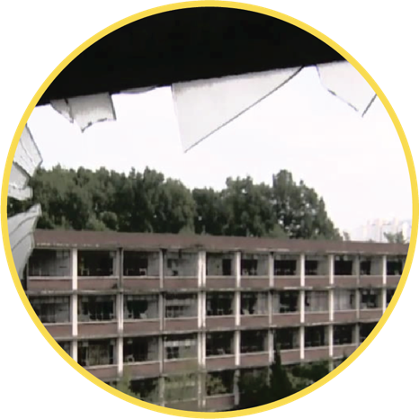
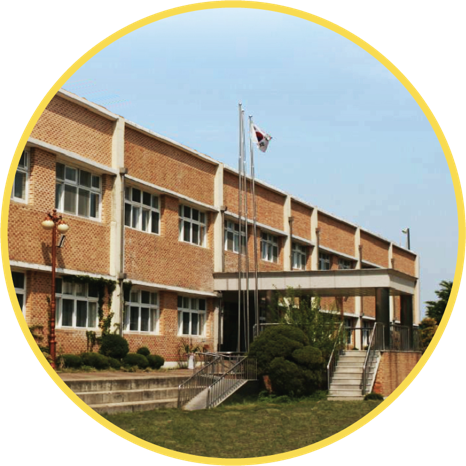
3. PROBLEM DEFINITION
CURRENT SITUATION
WHY IS THIS A PROBLEM?
demographical data
(ex. number of students)
(ex. number of students)
PCA Algorithm
T-sne Algorithm
regional financial data
(ex. regional budget)
(ex. regional budget)
This project experimented with how data can be used to create social value. We first wanted to start from a social problem in our neighborhood, which was the phenomenon of schools closing in rural areas in Korea. As a designer, I had to interpret raw data analysis results that I received from my other teammates and think of methods to visualize it effectively. I first had to understand and study how to read the data results and configure each result that we want to portray to users. Then this was described visually, which challenged me into the field of information design as well.
5. REFLECTION POINTS